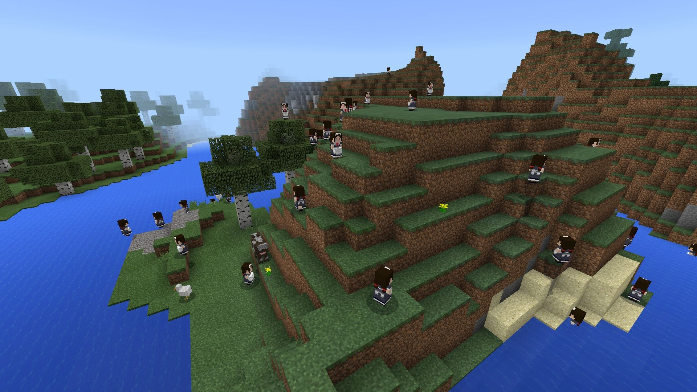
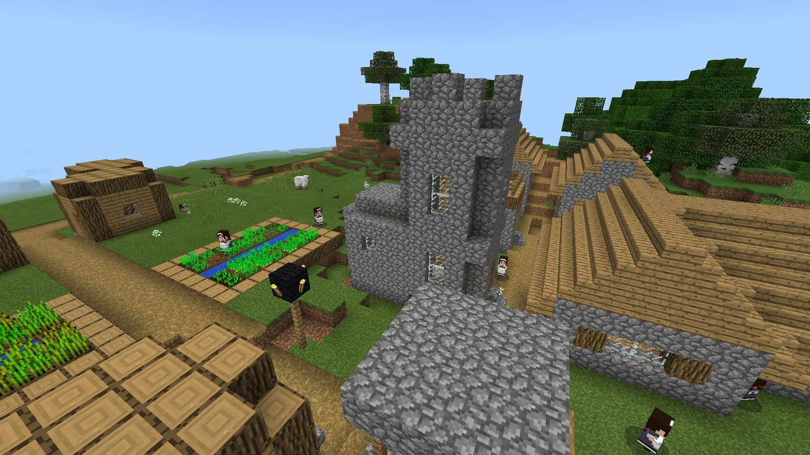

内容
村人のモデルをLittleMaidのモデルに変更するリソースパックです。
ただそれだけ
機能一覧
1.村人のモデルをLittleMaidのモデルに変更
スクリーンショット
メイドさんを正面から見たとき
メイド天国
メイドさんが村にいるやつ
動作環境
Minecraft : 1.2.0.11(で確認)
他のバージョンでも使用できる場合や使用できない場合があります。
導入方法
mcpackをMinecraft(PE)で開けばおｋ(多分)